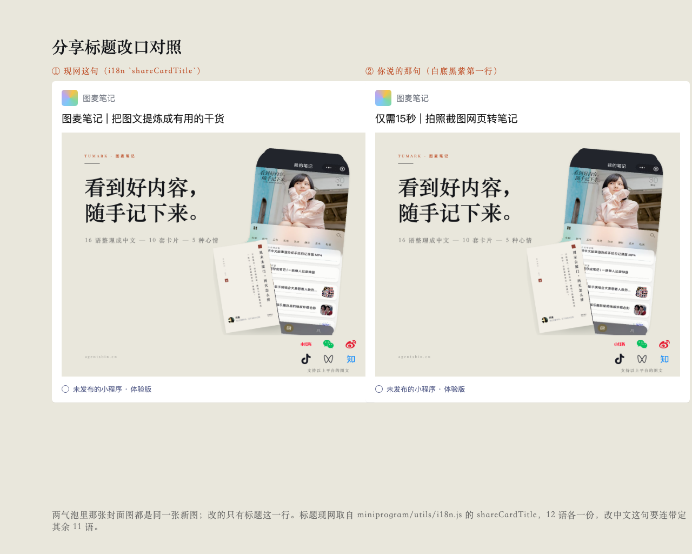
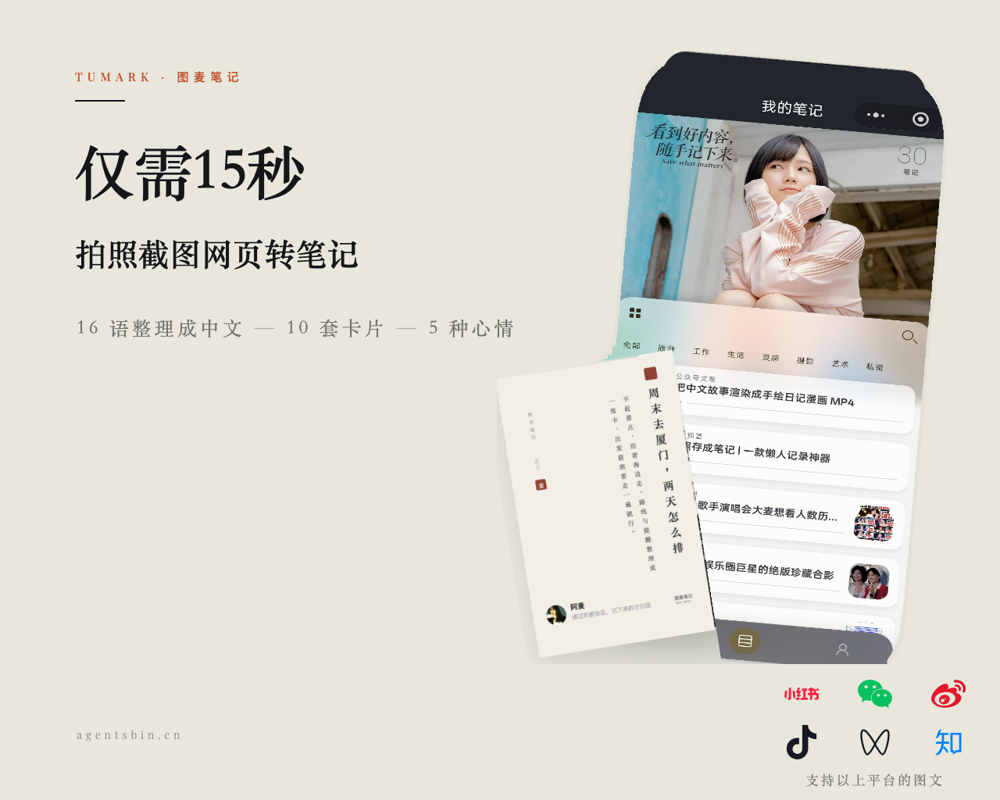

甲 · logo 压右下（他说的位置）
手机组从 720 缩到 600（−17%）才腾出右下那条带；六枚 44px、那句 17px。折 JPEG 1280×1024 q4＝106,626 B（占微信 128KB 上限 81.3%）。
乙 · 手机不缩，logo 挪左下空档
手机保持现网 720 那档，列表那几行字看得清；代价是 logo 不在右下。q4＝116,732 B（89.1%），离上限只剩 14,340 B。
丙 · 「仅需15秒 | 拍照截图网页转笔记」按分享标题读

这句的形状和现网那句 shareCardTitle 一模一样（名字 | 一句话），所以先按标题处理：改的是 miniprogram/utils/i18n.js:269，图上一行字没动。
丁 · 同一句按图上第一行读

撤掉「看到好内容，随手记下来。」，把那句拆成两档字。q3＝113,061 B（86.3%）。